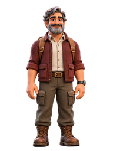

El explorador
Adulto, cabello plateado, complexión robusta
He is standing.Él está de pie.
Barba y rostro
Ropero · Wardrobe
Órdenes en inglés
Las acciones de cambiarse de ropa y afeitarse actualizan el personaje en todas las habitaciones. Los movimientos complejos siguen pendientes de sprites animados individuales.
Esta versión ya usa imágenes rasterizadas del protagonista, no el personaje vectorial anterior. La personalización de cabello, rostro, atuendos adicionales y más personajes se incorporará a medida que tengamos recursos artísticos consistentes.